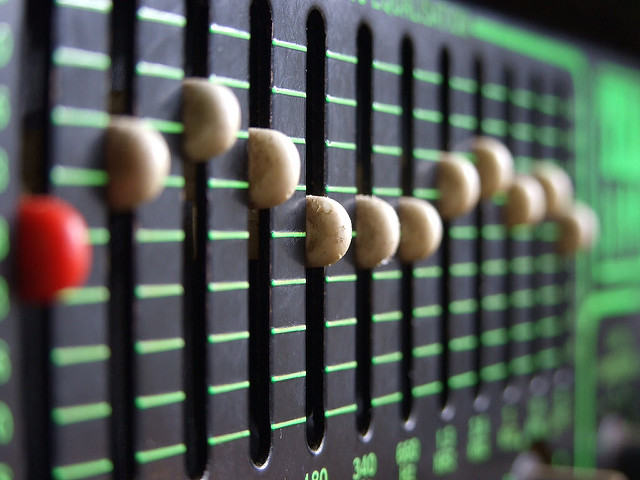

A guitar amplifier, most commonly known as an amp, is a device that strengthens/enhances the sound of an electric guitar or bass, or acoustic guitar. An amp is also used to modify an instrument's tone by adding electronic effects such as equalizer controls, distortion, and reverb.
The equalizer controls on a guitar amp are normally used to balance the frequency signals between the amp and guitar itself. The guitarist can adjust these setting as they see fit and get them to their liking. The image below shows what a sound board looks like with some equalizer controls on it.
Distortion is used to alter and enhance the sound of a musical instrument, most commonly an electric guitar and bass guitar. The sound distortion produced is more of a "fuzzy", "growling", and "gritty" tone rather than a "clean" sound that you would get if distortion was turned off.
Some genres of music that consistantly use distortion as a key part in the instrumental aspect of music creation is hard rock, punk rock, blues, hardcore punk, and heavy metal just to name a few.
If you click the play button below, you can hear what an electric guitar would like if it was plugged into an amp with distortion turned on.
Reverberation, most commonly known as reverb, is the effect that is created to make the guitar or instrument sound like you are hearing it with an echo. Musicians often use it when they want to add that special effect on a certain track they are looking for or even on a group of songs. It also allows some separation between tracks and instruments that are being played on each track.
Marshall, Fender Hot Rod Deluxe IV, Yamaha